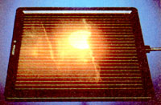
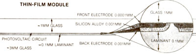

Photovoltaics Today
Solar cell technology is in a state of transition, and now may be the time to get involved, including home-scale PV matures, shopping for panels, new technologies, Arco Solar's genesis.
By TJ Byers
July/August 1985
Solar cell technology is in a state of transition, and now may be the time to get involved.
PHOTOS COURTESY OF ARCO SOLAR
When THE Mother Earth News got its start some 15 years ago, photovoltaics (the direct production of electricity from sunlight) was little more than an expensive spaceage curiosity used on earth-orbiting satellites. Over the years, though, we've seen solar cells migrate down to terra firma. . . and MOTHER has done her best to keep you up-to-date on the transformation of photovoltaics into a consumer technology. Today it's time to review recent progress in the field and let you know what's currently available.
WEATHERING THE STORM
Since 1980, we've seen many alternative energy sources fall by the wayside (at least temporarily) as oil prices have eased. A gallon of gasoline that cost 50 cents 12 years ago, be fore the OPEC oil embargo-you remember, don't you?-goes for just slightly more than twice that price today. And if you take inflation into account, gas prices haven't increased at all over that period! This unexpected stability in fossil fuel costs has wreaked havoc with the development of many renewable technologies, but photovoltaics has not only survived-it has, by comparison, actually flourished! Sales (on a per-watt basis) have increased by more than 550% since 1980, though much of the 1983-84 increase was from Japanese production of modules for consumer electronics.
Photovoltaics, probably more than any other renewable technology, lends itself to gradual expansion. The modular design of photovoltaic systems-you can start with one panel and add more later-allows us, the consumers, to get involved for a reasonable amount of money and expand our systems as finances are available. By the same token, expandability has saved PV companies from an all-ornothing sales syndrome. Residential panel producers haven't made a lot of money lately, but a surprising number have managed to stay in business. The flexibility these innovators have demonstrated has gradually reduced the cost of panels, and it has virtually guaranteed solar electricity a place in our energy future.
HOME-SCALE PV MATURES
The typical photovoltaic array has changed significantly in the last five years. Not only are different cells being used in many cases, but the systems themselves have become much more sophisticated. Five years ago, lowvoltage arrangements were all the rage-and for good reason. Panels were so expensive back then that most people couldn't afford many, so the voltage was inherently limited. The industry grew up on the concept of 12-volt modularity, so 12-volt systems were what you found.
But PV practitioners soon found that low-voltage systems suffered from high internal power losses that degraded overall performance. Conventional household wiring designed for high-voltage, alternating-current (AC) electricity wasn't stout enough to handle the high currents imposed by low-voltage, direct-current (DC) electricity-remember, power is the product of voltage and current-and the results of trying to adapt 12-volt power to a normal home were often disappointing ... especially for inexperienced owner-installers.
However, recent advances in both photovoltaics and power inverters (which change low-voltage, DC electricity to highvoltage, AC electricity) have altered the way most systems are installed. Panels are less expensive, particularly when the price is adjusted for inflation, and power inverters have become much more efficient and less costly, as well. Consequently, there's a growing preference for high-voltage systems that mimic normal household current.
With this change in the way photovoltaic panels are put to work has come a significant change in the typical PV owner's lifestyle. Five years ago, most users were resigned to the fact that solar electricity would force them into a more "primitive" way of life-with limited appliance selection and rationed energy resources. Not any more. Today, most people would have a hard time telling the difference between electricity provided by a modern photovoltaic system and that offered by the area's utility company. There's no longer any reason to put up with a less than acceptable selection of 12-volt appliances. If it plugs into the wall, PV panels and an inverter can run it.
SHOPPING FOR PANELS
As cell technology and system design have matured, the PV marketplace has changed considerably. This is a time of great opportunity for the bargain hunter. Discount panels can be found almost anywhere . . . in fact, a quick look through the ads in this magazine will show that Energy Sciences (the Solarex retail outlet) is selling its 30-watt module for two hundred bucks and change. That's a little more than half of what a comparable module sold for only one year ago.
The persistent can also find bargain panels on the surplus market. These may be used modules salvaged from a renovated system, or they may be from inventory overflow. Several manufacturers are currently offering heavy discounts on new but discontinued items.
As the market goes through the shakeout period that's almost certain to precede the expiration of the solar tax credits at the end of this year, you're likely to see steady dumping of PV modules as manufacturers and distributors alike cash out prior to the sales slump that will probably follow. Furthermore, it seems unlikely that prices will go up after the credits have expired. Overall, the discount market is the best it's ever been, and it looks as if it might stay that way for another couple of years.
Big savings can also be realized by joining with others to buy in bulk. Over the years, the PV-Network News (subscriptions are available for $15 per year from Solar Works!, Rt. 2, Box 274, Santa Fe, NM 87501) has sponsored a number of bulk purchases of ARCO Solar panels for its subscribers . . . and at excellent prices. These weren't closeouts or seconds, mind you; they were first-quality solar modules under full warranty.
Bargains can also be found in mail-order catalogs. In MOTHER NO. 90, page 132, we printed a list of such companies offering equipment for low-voltage living. Many of these firms sell photovoltaic panels as well. Also, for the person interested in buying and installing his or her own photovoltaic system, Joel Davidson and Richard Komp's book, The Solar Electric Home (available from Solar Works! for $12.95), is an invaluable guide to using PV and provides a good list of suppliers. The main disadvantage to catalog sales is that it's harder to stay in touch with (and get technical advice from) a supplier that's thousands of miles away.
Then again, single-minded bargain huntmay not be everyone's best approach to buying solar panels. To take full advantage of the lower cost, you must know what you need and how to put it to work. All too often, a person with little or no solar energy experience will be disappointed with the end result because there wasn't enough forethought given to system design or user requirements.
This situation has led to a tremendous growth in the third source of photovoltaic panels: local retailers. Today there are few areas in the United States where someone selling PV panels isn't within a reasonable distance. And when you buy locally from a qualified dealer, you're getting more than just merchandise; you're also purchasing the years of experience that person has invested in de signing and installing functional systems Sure, the price is going to be somewhat higher but when you consider how much longer it might take you to accomplish the job on your own, buying locally might actually work out to be less expensive. And remember, installed systems normally include service after sale and warranty protection.
As this is written, individual solar modules are selling for between $6 and $10 per watt, but the lower-priced panels are seconds and don't carry a warranty. Installed systems. complete with batteries, inverter, and necesary hardware, go for around $10 to $20 per watt, depending on your needs. A typical 2,500-watt system (with 500 watts of PV power and hardware) will run you anywhere from $4,500 to $12,000
NEW TECHNOLOGIES
Single-crystal silicon solar cell have been the workhorses of the solar industry for more than 20 years, and if you buy in the next year or two, they're probably the type you'll end up with. For a couple of reasons, however, single-crystal cells are beginning to feel the pinch from emerging technologies. Crystalline cells are fabricated from a wafer of absolutely perfect, ultrapure silicon . . . using the process I described in MOTHER NO. 76. Making such a perfect wafer is extremely energy-intensive and expensive, so manufacturers have been trying for years to improve the process.
The most promising of the new technologies at this point is called thin film. Unlike the single-crystal process, in which the wafer is physically carved from a solid block of sili con, the thin-film process turns the silicon into a gas that is deposited as a vapor on an inexpensive backing, such as window glass. The glass is thus coated with an extremely thin layer of amorphous silicon that serves as the semiconductor base for the solar cell.
Thin-film technology's main advantage is that it uses 1/300 the amount of silicon that's needed to make a single-crystal cell. Now, raw silicon itself isn't expensive (beach sand is made of it), but it's worth about $300 per pound by the time it's been refined sufficiently to make a solar cell. The savings, then, are pretty obvious.
Another advantage to thin films is that they offer a greater latitude in the types of materials that can be used to fabricate them. Until the advent of thin films, solar technology was pretty much limited to a small group of semiconductor elements-silicon was the leading contender. With the new method of cell production, however, engineers are now free to work toward developing the most cost-effective combinations possible.
This effort is already paying off. Bill Yerkes, a pioneer in photovoltaics and the founder of what is now ARCO Solar, recently announced the development of a thin-film solar cell using cadmium telluride. Yerkes's new cell contains absolutely no silicon, and he claims it will cost less to manufacture yet will perform better than amorphous silicon cells. By the time you read this, his new venture-Industrial Design, Inc., of Chattsworth, California-will be manufacturing cadmium telluride solar cells on a production basis. [EDITOR'S NOTE: An article on Yerkes's PV-equipped mobile home appeared in MOTHER N0. 82. For information on ordering this and other back issues mentioned above, turn to page 108.]
As 1990 approaches, there will be a gradual shift in the consumer market from single-crystal products to thin-film designs. This metamorphosis means that good deals will abound during the transition period. All in all, now is a great time to invest in your future-by investing in photovoltaics.
ARCO SOLAR'S GENESIS
The industry's first high-powered thin film photovoltaic module was unveiled recently by ARCO Solar, the world's leading producer of PV power. The module is named, appropriately enough, Genesis. This one-foot-square panel is made with an amorphous silicon-hydrogen compound by an advanced thin film technique. The introductory module, which generates 5 watts at 12 volts, is targeted at recreational vehicle owners, who previously have had to live with panels that really were too large and powerful for their occasional needs.
ARCO's new module represents far more than just another item in a long line of successful products. It actually introduces a revolutionary change to the photovoltaics-manufacturing process. A Genesis panel is made by depositing a micro-thin layer of amorphous silicon on a sheet of treat ed window glass. The silicon is then exposed to various levels of chemical processing to form the all-important semiconductor junction, where sunlight is converted to electricity. Furthermore, unlike conventional solar panels, which require that the individual solar cells be wired together by hand, the Genesis module is manufactured as a solid unit. This advance is analogous to the transition from discrete transistors to integrated circuits in the electronics industry a few years ago.
All 25 of Genesis's cells-the number needed to generate 12 volts-are fabricated in a single process. Prior to the deposition of the amorphous silicon, a grid of conductive tin is laid down on the inside surface of the glass to serve as the connecting electrodes. The pattern of the grid is arranged in such a way that no two adjacent strips are touching. When the silicon is deposited on top of the tin, the photovoltaic junction is formed.
By the time the process is complete, the single pane of glass contains 25 contiguous solar cells. Finishing the module consists only of connecting the cells with another mask and applying aluminum alloy to the back of the cell. The drawing on page 77 shows the geometry of a Genesis module viewed from the edge. Remember as you look at it that the cells are laid down in strips; what you see are two adjacent cells.
This procedure has two advantages. First, manual labor is no longer required to connect the cells, so manufacturing costs are reduced. Second, because the interconnection between cells is an actual part of the solar cell forming process, there's less chance of something coming loose. Module reliability is improved.
Admittedly, ARCO Solar's Genesis is but a small step in the new direction. Higher-power modules might be the next stage. But Genesis is an important first step.
 |
 |
 |